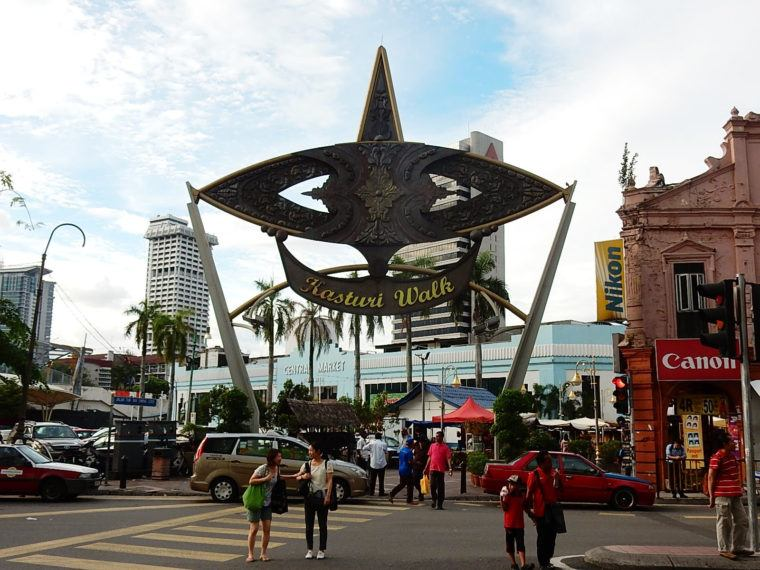
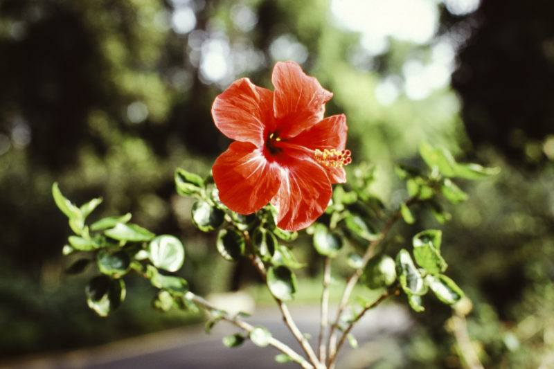

3 Days in Kuala Lumpur, Malaysia - Itinerary, Travel Costs & Tips
10.1.2018
Malaysia is not an alien place to almost everyone, and where seems the best to go when you only have a weekend to go around the city of ‘ wei macha, you want to makan here or tapau?’ – Anonymous – YES! You read it right… A city where it is comprehensible to put four languages in a sentence – Malay, Tamil, English and Chinese!
Note: This article doesn’t include the guide to the usual spots like KLCC and Batu Caves!
Wanna put your haggling skills to test while enjoying historical places? Opened since 1888, Central Market is a perfect place to get souvenirs to your loved ones. Just beside the building, along side is the Kasturi Walk, with a pewter wau bulan (a type of kite of the local Malay) that welcomes you right at the entrance, is an open-flea market. Few minutes walk down the road will be the little China Town or locally known as Petaling Street, another open-flea market with wider options and varieties, although both places have some kind of vendors similarities. This is where you can really test your haggling skills!
A nature touch into the hustle and bustle KL city is the Perdana Botanical Garden located at the Heritage Park of KL, originally a Lake Garden and transformed into a botanical garden with an ambiance of tropical forest. The park has some gardens and things to look forward to, i.e., hibiscus garden, orchid garden to a 2hectres deer park.
Known with the constitutional monarchy system, a visit to the Royal Palace; home to Malaysian King, Yang di Pertuan Agong, is a place not to be missed. It has a huge garden and stationary guards at the gates with horses; which are the main attraction here since public are strictly prohibited from entering the palace and it can only be seen from a distance.